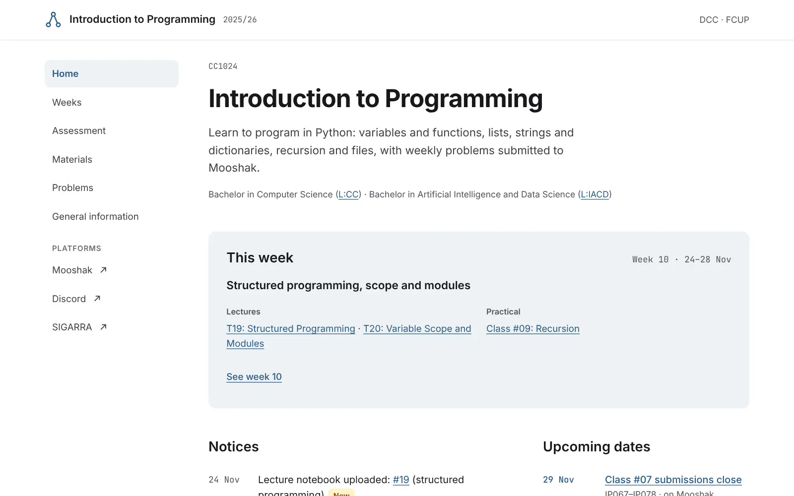
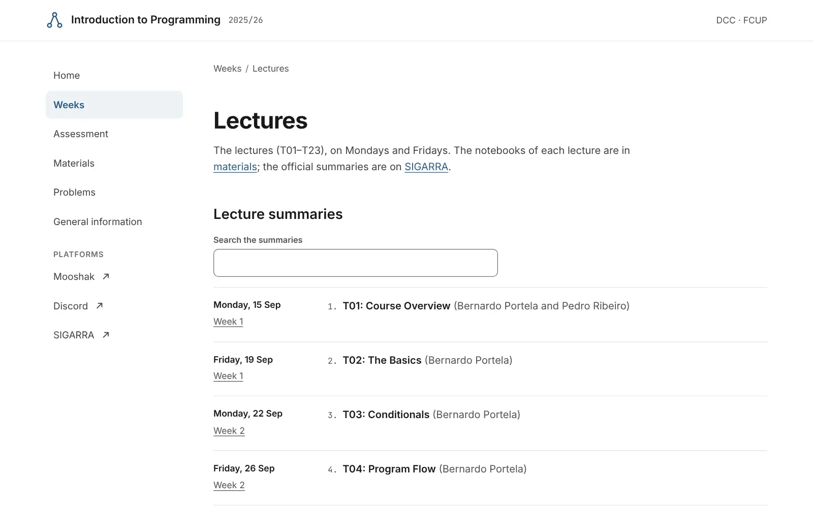
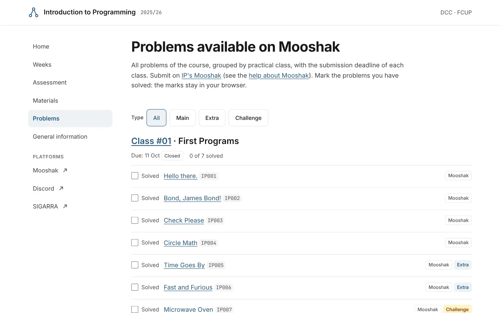
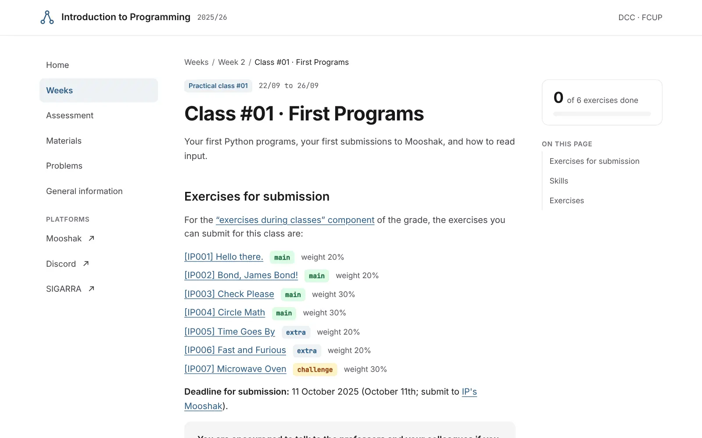

Exemplos
Introduction to Programming 2025/26
O site de Introdução à Programação (CC1024, DCC/FCUP), refeito com o kit a partir do site original: sete páginas principais, sumários das teóricas, onze aulas práticas, dois testes e 107 problemas para submeter no Mooshak. Mostra uma cadeira grande do 1.º ano, com muitos prazos e muitos problemas.
O conteúdo deste exemplo (textos, guiões das aulas práticas, testes, exame, enunciados e imagens) é dos Profs. Pedro Ribeiro e Bernardo Portela e foi copiado do site original só para demonstrar o kit. Não está abrangido pela licença MIT: ver o NOTICE.md. Use-o como referência de estrutura, não como conteúdo a copiar.
O site

<uc-this-week> com as teóricas e a prática da semana.
<uc-summaries search>, com as datas ligadas às semanas.
<uc-problems> por aula, com o prazo de cada uma.
<uc-guide> com <uc-exercise> e progresso guardado no browser.Páginas e o que usam
| Página | Componentes | Blocos e notas |
|---|---|---|
index.html | <uc-hero>, <uc-this-week>, <uc-notices>, <uc-deadlines>, <uc-team> | uc-split, uc-shortcuts, uc-grid e uc-card. |
weeks.html | <uc-weeks>, <uc-week> | 13 semanas com teóricas e práticas, e a semana de Atividades FCUP. |
lectures.html | <uc-summaries search> | Sumários T01–T23, às segundas e sextas. |
assessment.html | <uc-grading>, <uc-deadlines> | uc-callout, uc-checklist, uc-bullets. |
materials.html | <uc-materials>, <uc-weeks> | Notebooks no Google Colab, uc-links--grid, cartões. |
about.html | <uc-team> | Objetivos, competências e programa numerado, uc-tag, uc-checklist. |
exam.html | <uc-assessment-info> | Texto original dentro de uc-content. |
practical/class01–11.html | <uc-guide>, <uc-exercise>, <uc-date> | Exercícios com etiquetas main, extra e challenge, dicas em uc-hint; as aulas 1 e 5 foram reescritas à mão, as outras convertidas por script. As aulas 6 e 9 usam widgets (crescimento, Fibonacci e subconjuntos). |
practical/test1–2.html | <uc-assessment-info> | Um cartão por exercício. |
problems/ | <uc-problems> | 107 problemas e o desafio de Natal; enunciados em uc-content, com MathJax onde há fórmulas. |
Todas as páginas usam <uc-page>. As que não estão na navegação dizem qual é o item ativo com current: ver páginas em subpastas.
O course.js
O course.js deste exemplo tem:
languages: ["en"], como o site original.- O semestre com 13 semanas e a pausa de Atividades FCUP (27 a 31 de outubro).
- Seis páginas na navegação e três plataformas (Mooshak, Discord e SIGARRA).
- Uma equipa de sete pessoas: dois regentes e cinco assistentes.
- Doze prazos de submissão (um por aula prática e o desafio de Natal), os testes e o exame, que aparecem no início, na avaliação, nas semanas e na lista de problemas.
search: true: o botão «Pesquisar» do cabeçalho procura em todas as páginas, incluindo os enunciados dos problemas e as aulas práticas. O índice é gerado pelouc-site.py.
Personalização
| Nível | No exemplo |
|---|---|
0: course.js | A cor de destaque (#2B5B84), as páginas e as plataformas. |
| 2: CSS livre | O theme.css tem o programa numerado, e classes com contraste suficiente para as cores do HTML antigo (.c-red, .hl-ok…), só com tokens. |
| 4: HTML livre | O exame, a ajuda do Mooshak e os 108 enunciados: HTML do site antigo dentro de <uc-page> e uc-content. |
Migrar um site antigo
As páginas que os estudantes usam todas as semanas (início, semanas, teóricas, avaliação, problemas e as aulas 1 e 5) foram reescritas com componentes. As restantes aulas e os enunciados foram convertidos por script a partir do HTML original: as cores antigas passaram a classes do theme.css e o código colorido passou a <uc-code>. As notas, salas e turnos, com dados de estudantes, não foram copiados: as páginas ligam ao original.
O registo completo (inventário, calendário reconstruído e pontos a confirmar com os docentes) está no MIGRACAO.md. Para fazer o mesmo com um assistente de programação, ver Migrar um site existente.